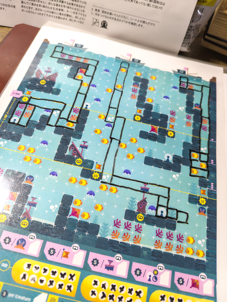

PDF ファイルを購入してから HDD の肥やしになっていた Postmark Games の AQIAMARINE という Print and Play ゲームをやっと印刷してプレイしてみた。
自分は昔はダイバーだったので (一応レジャーダイビング分野で仕事で潜ってた)、いろいろ頭に浮かんできて、それがゲームを楽しむ邪魔になった。
このゲームには水深が深くなればなるほどエアーをより消費するということが盛り込まれているが、さすがに減圧の概念までは盛り込まれていない。
元ダイバーとしては減圧理論を盛り込んだらより面白くなるかもと思ったりもしたけれど、よくよく考えたらプレイ条件に OWD 以上というわけのわからない制限が出てきてノンダイバーは手出しできないものに……ないな、これは。